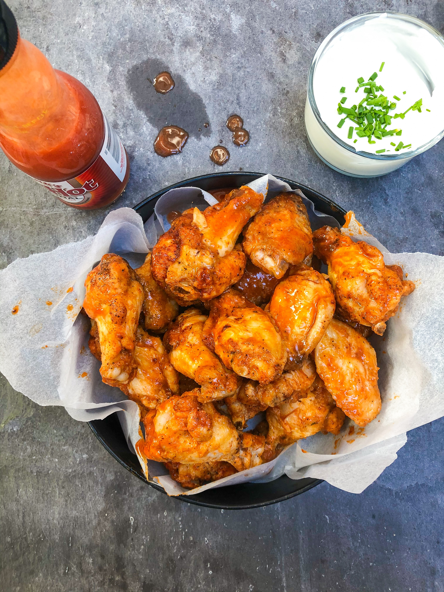

Crispy Buffalo Chicken Wings

The Crispiest Buffalo Chicken Wings
Baked buffalo chicken wings are marvelous.
You can get the crispy texture without the
need to use lots of fryer oil. All using
baking powder and a handy wire rack, they
get the perfect crust with a fraction of
the fat of deep-fried wings. Tossing with
buttery, tangy buffalo sauce makes the
wings irreristibly good.
Ingredients to get the pefrect crispy buffalo chicken wings
- 1 kg of chicken wings
- 1 tbsp of baking powder
- 2 tsp of salt
- 3 tsp of garlic powder
- Unsalted butter
- Choice of store-bought ot homemade hot sauce
- A sprinkle of sugar
How to make them
- Prep the wings, cut them in half and pat dry with a paper towel.
- Mix the dry seasoning, combine the salt, baking powder and garlic powder.
- Mix in the dry seasoning with the wing, toss in a large bowl until well-coated
- Place evenly on wire rack and bake, place in the center of the oven and bake on 350 F for 50 minutes.
- Make buffalo sauce, mix in melted butter, sugar and hot sauce in a medium bowl.
- Toss the wings in sauce, transfer the wings into a larger bowl and drizzle sauce.
- Serve with your favorite dipping sauce. (I recommend blue cheese)
- Serve immediately, garnished with fresh parmesan.